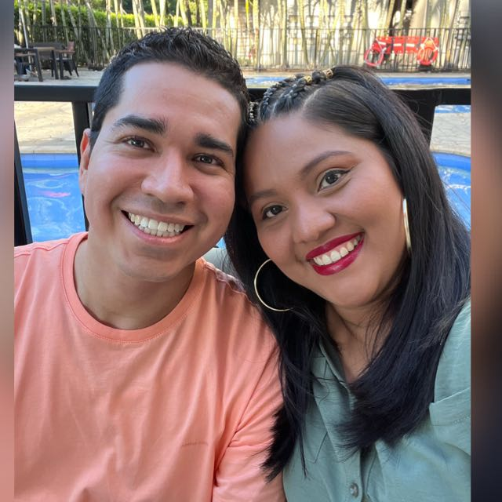

Andres Esteban Fagua Castro | WDD 130
This is my first website, I am really happy you are reading it. I love to watch tennis and american football. The best thing that has ever happened to my is my wife. I'm really happy families are eternal. I am from El salvador. When I was a little boy I always dreamed of having my own family and now that I have it I can't be more grateful towars our Heavenly father because of his love for myself and my familiy members.